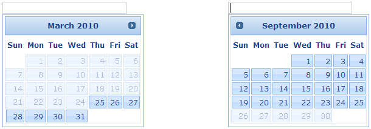

Using Builder
The following section explainshiding the navigation buttons of the Date Picker using Builder.
1. In View, invoke the Date Picker helper followed by the HidePrevNext method with argument set to ‘true’.
|
View[aspx]
<%=Html.Syncfusion().DatePicker("myDatPicker") .MinDate(DateTime.Now.AddMonths(-3)) .MaxDate(DateTime.Now.AddMonths(3)) .HidePrevNext(true)%>
|
|
View[cshtml]
@{ Html.Syncfusion().DatePicker("myDatPicker") .MinDate(DateTime.Now.AddMonths(-3)) .MaxDate(DateTime.Now.AddMonths(3)) .HidePrevNext(true).Render();}
|
2. Build and run the application.
Using Properties Model
The following section explains the setting of the navigation range of the Date Picker using Properties model.
1. In the Controller, create an instance of the DatePickerModel, set the HidePrevNext property and pass the instance through view specific data to View as given below.
|
[Controller]
public ActionResult Index() { //create an instance of DatePickerModel DatePickerModel myModel = new DatePickerModel(); myModel.MinDate = DateTime.Now.AddMonths(-3); myModel.MaxDate = DateTime.Now.AddMonths(3); myModel.HidePrevNext = true;
//pass the instance through view data to the view ViewData["myDatePicker"] = myModel; return View(); }
|
2. In View, invoke the date picker helper with the view data key as the Control ID.
|
View[aspx]
<%=Html.Syncfusion().DatePicker("myDatePicker") %>
|
|
View[cshtml]
@{ Html.Syncfusion().DatePicker("myDatePicker").Render(); }
|
3. Build and run the application.
You can observe the navigation buttons hiding on reaching the navigation limits defined by the Max and Min Date properties.

Figure 105: Date Picker with navigation buttons hidden